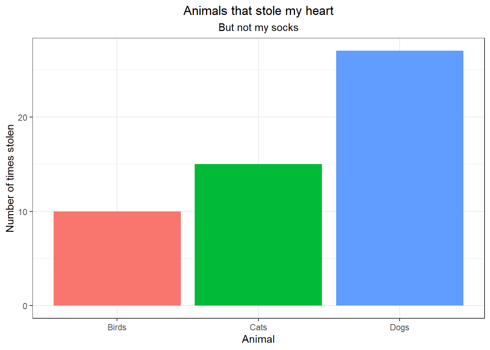

| Shape | Sides | Other |
|---------|-------|-------------------|
| Circle | 1 | Comfortable ring. |
| Triange | 3 | Umm..... |
| Square | 4 | Yeah nah |4 Tables and Figures
4.1 Section Outline
The section will assist you with including tables and figures into your RMarkdown document.
Teaching Time: 10 Minutes
Working Time: 5 Minutes
4.2 Tables
4.2.1 Text
| Shape | Sides | Other |
|---|---|---|
| Circle | 1 | Comfortable ring. |
| Triange | 3 | Umm….. |
| Square | 4 | Yeah nah |
4.2.2 Code
library(kableExtra)Warning: package 'kableExtra' was built under R version 4.2.3# create fake data
df <- data.frame(
names = c("Donald Duck", "Mickey Mouse", "Goofy"),
salaries = c(100000, 150000, 50000)
)
# create the table
kable(df, "html") %>%
kable_styling(bootstrap_options = "striped")| names | salaries |
|---|---|
| Donald Duck | 100000 |
| Mickey Mouse | 150000 |
| Goofy | 50000 |
4.3 Figures
4.3.1 Generated
Reproducible figures can be generated in the RMarkdown document in a code chunk.
library(ggplot2)
# create fake data
df <- data.frame(
category = c("Cats", "Dogs", "Birds"),
count = c(15, 27, 10)
)
# create the plot
ggplot(df, aes(x = category, y = count, fill = category)) +
geom_bar(stat = "identity") +
labs(title = "Animals that stole my heart",
subtitle = "But not my socks",
x = "Animal",
y = "Number of times stolen") +
theme_bw() +
theme(plot.title = element_text(hjust = 0.5),
plot.subtitle = element_text(hjust = 0.5),
legend.position = "none")
4.3.2 External
4.3.3 Chunk options
Below is a curated list of chunk options for figures. As you learn more, this list might vary for you.
| Option | Description |
|---|---|
fig.height |
Height of the figure in inches. (Coded as 9 not “9”) |
fig.width |
Width of the figure in inches. (Coded as 9 not “9”) |
fig.align |
Where do you want your figure i.e. default, centre, left, or right? |
fig.cap |
Add a caption to your figure. |
Each of these options can be defined in each chunk of you can define them globally (best included in your first code chunk):
knitr::opts_chunk$set(chunk_option1 = TRUE, chunk_option2 = FALSE, ...)
Important
Best practice is to save all your figures. This can be done by inserting the following code into your YAML header:
output:
html_document:
keep_md: trueNote: This code will be different if you are using a different output format.
4.3.4 Exercise
Change the figure in lotr.Rmd to have:
- a height of 5 inches, and
- a width of 3 inches.
Make sure to save the image as well. Can you locate the saved image in your files?